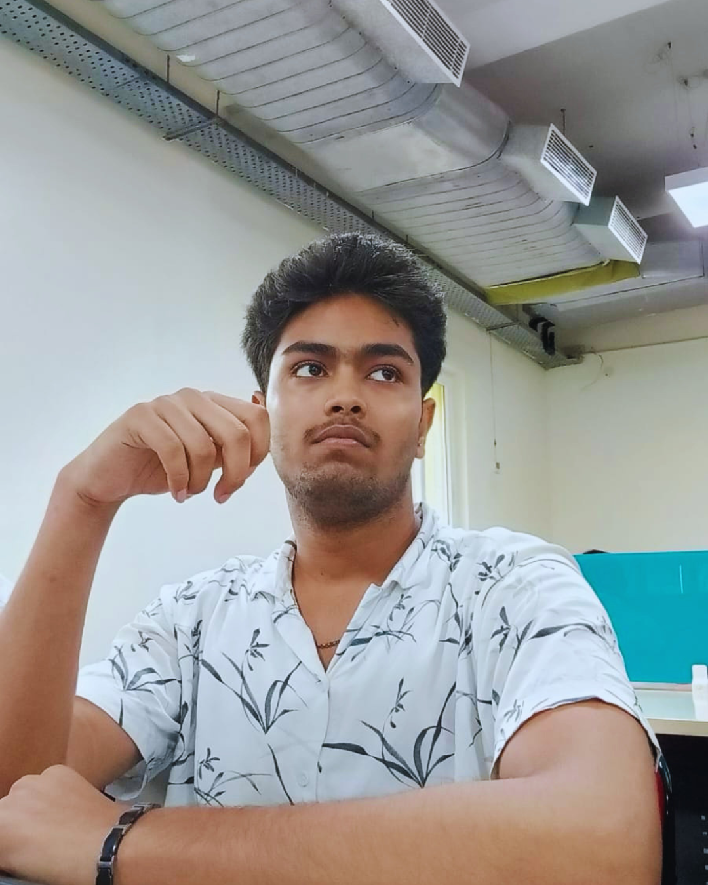

Machine Learning
Training and evaluating deep learning models (CNNs, Transformers, XGBoost) with SHAP explainability.
I build intelligent systems — from deep learning models and computer vision pipelines to LLM-powered applications. Let's build something smart together.

Hi, I'm Shiv! A Computer Science undergrad minoring in AI who builds and ships Python-based AI systems end-to-end — from integrating LLM APIs into production apps to training deep learning models evaluated with rigorous, production-relevant metrics. When I'm not training models, I'm exploring RAG pipelines, agentic workflows, and open-source AI tooling.
Training and evaluating deep learning models (CNNs, Transformers, XGBoost) with SHAP explainability.
Building with LLM APIs, prompt engineering, RAG, and agentic workflows (LangChain/LangGraph).
Shipping AI features with FastAPI, PostgreSQL/Redis, and React/Streamlit front ends.
Always learning, always building
Started my CS degree with a minor in Artificial Intelligence.
Engineered domain-specific features and trained Gradient Boosting/XGBoost models (R² 0.91), with an interactive Streamlit app and SHAP explainability.
Designed ACS-SegNet, a hybrid CNN–Transformer segmentation architecture, achieving 92.04% accuracy on histopathology tissue segmentation; deployed as a production FastAPI inference service.
I'm ready to contribute to a team building useful, reliable AI systems.
AI systems and the dependable product infrastructure behind them.

AI-powered landing-page personalizer that extracts ad intent with Gemini API, with a robust rule-based fallback.

LLM-powered document summarization, key-insight extraction, and Q&A with PDF parsing and chunked processing for long documents.

FastAPI + React URL shortener with JWT auth, PostgreSQL/SQLAlchemy, async Redis caching, pytest coverage, and Docker Compose.
Patent-published Government of India system (App. No. 202611006333 A) using Gradient Boosting/XGBoost models (R² 0.91) and SHAP explainability.
Building AI systems and always open to interesting problems — let's talk.
shivnarainofficial24@gmail.com
Kanpur, Uttar Pradesh, India